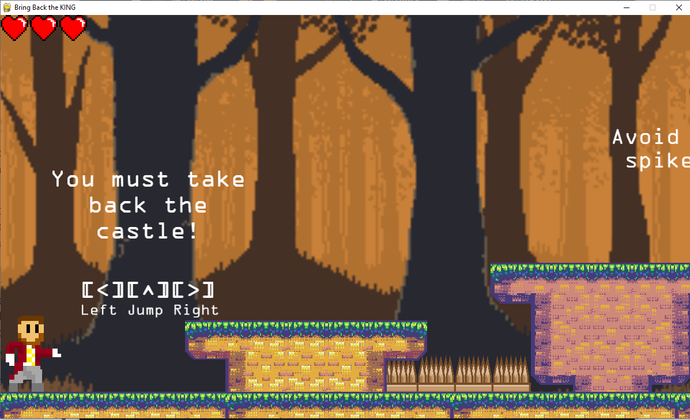
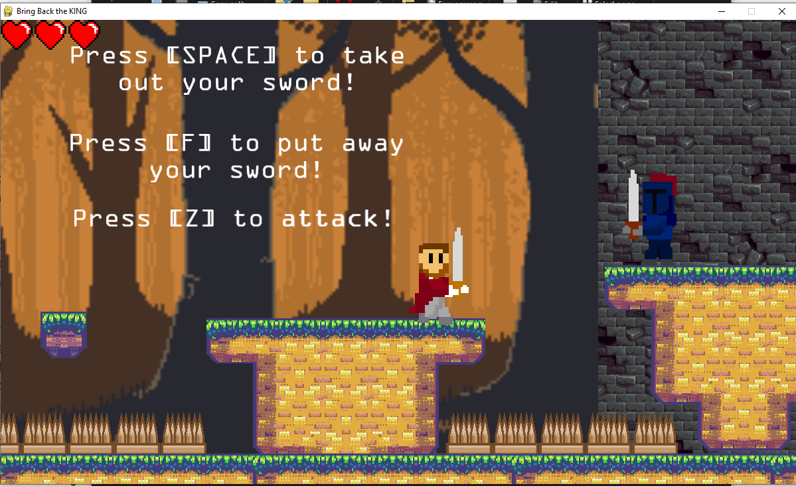
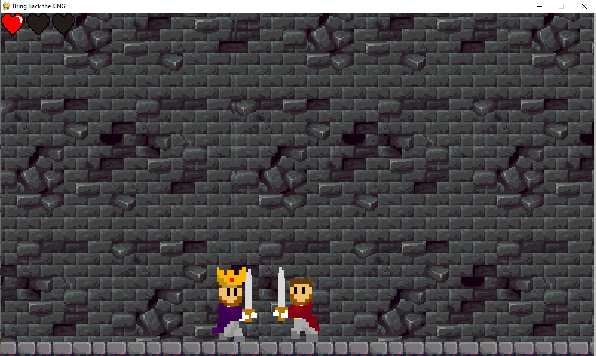

TechNL Challenge Project
Summer 2022
Skills Used: Python, Git, Project Management, Team Collaboration, Game Design
Libraries Used: PyGame

Overview
- Developed a 2D platformer game titled Bring Back the King.
- Included player combat mechanics, multiple levels, and a final boss fight.
Background
- Completed during the TechNL High School Immersion Program while at Compusult Ltd.
- Students participated in a Python course through Keyin College, and this project was the final submission of my group.
- Final group assignment completed online with a team of three, meeting via Microsoft Teams.
Project Description
-
Designed and developed gameplay systems with PyGame, which included the following mechanics:
- A gravity and movement system for realistic platformer mechanics
- Collision detection with platforms and objects
- Player input handling and attack mechanics (hitboxes, health system)
- NPC and boss enemy behaviour, including attacks and movement patterns
- Tile-based level creation
- Animated sprites for players and enemies
- Produced hand-drawn character sprites and used additional assets from free online libraries.
- Applied modular programming practices to manage the game files and assets.
- Used Git/GitHub for collaboration and version control.
- Collaborated effectively with the team, managing tasks and troubleshooting technical issues.


